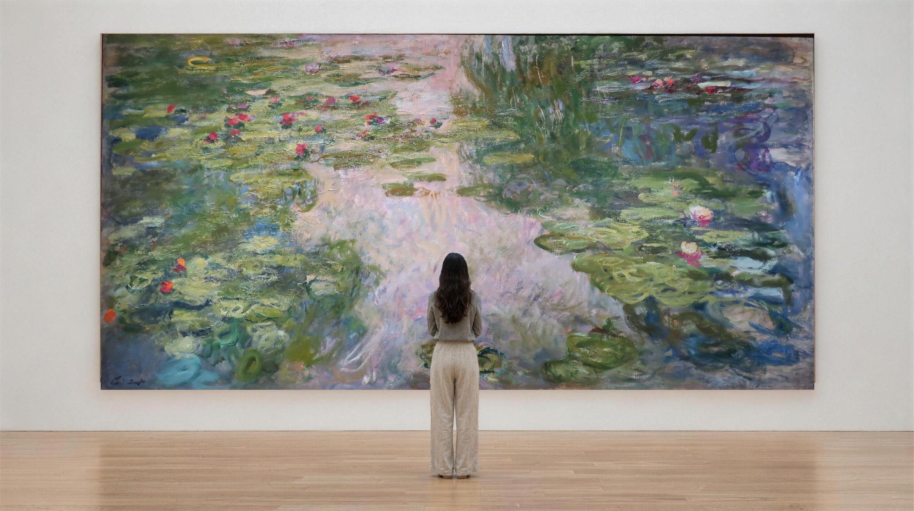
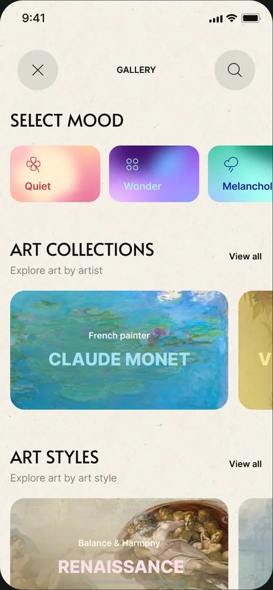
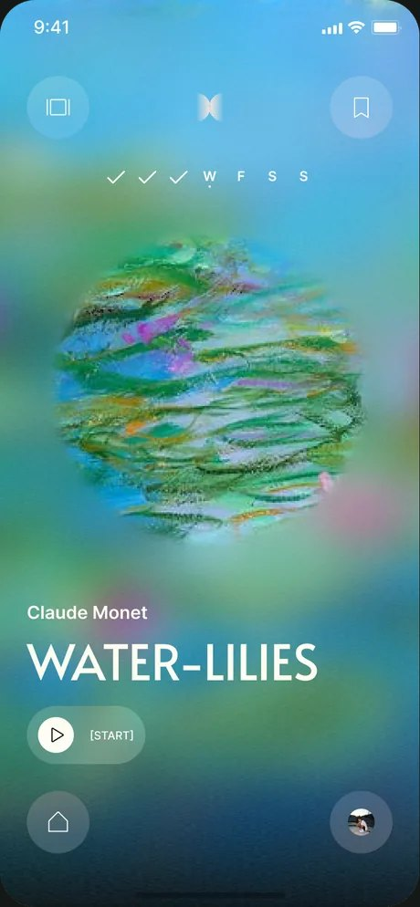
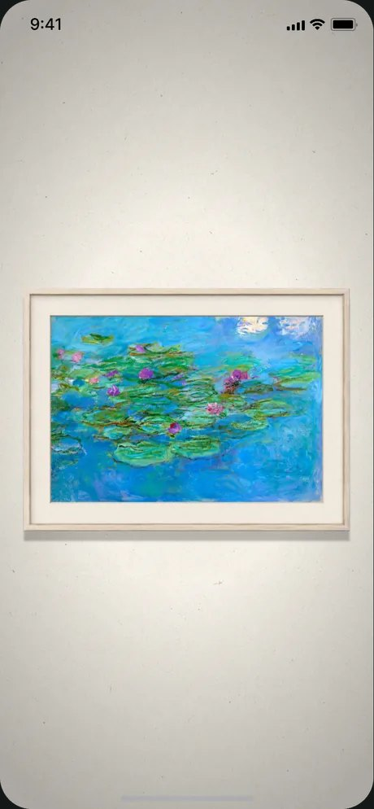
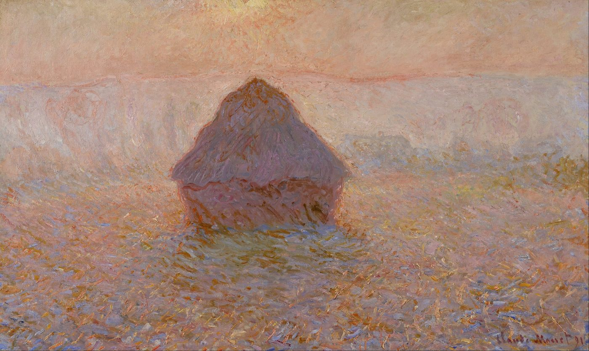
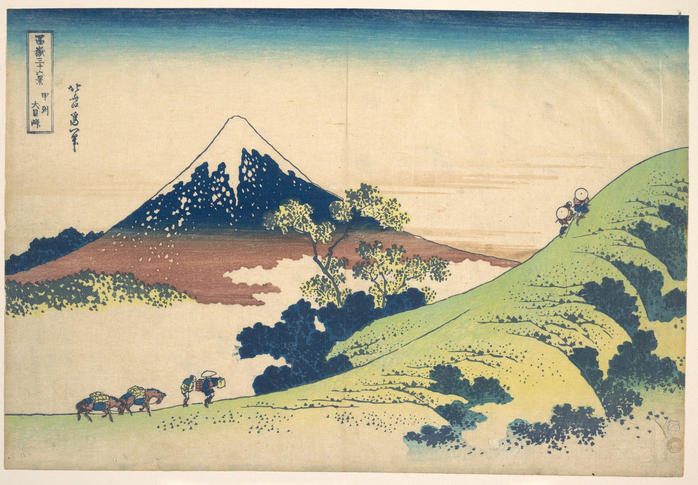

01
Wander our galleries
Explore a collection of pieces curated by our team of art historians from Oxford University, Sotheby's, and Christie's. From Monet to Titian to Hokusai, each piece is chosen for its meditative depth and unique message.





Paul Cézanne (1839–1906) · 1882–85 · Oil on canvas · The Metropolitan Museum of Art
The primer and transition are free to try. The meditation itself lives in Heartful, arriving soon.
Join the waitlistYounger measured brain age in people who practise visual art, versus matched non-artists
The study ↗
“We didn't realize until we did these studies just how powerful an effect art has on the brain.”Semir Zeki · Neurobiologist, University College London
Scans measured the brains of individuals while they were shown images of paintings. According to the scans, “when you look at art… the blood flow increased for a beautiful painting just as it increases when you look at somebody you love.” The reaction was immediate. Pleasure measurably increases, and a lunchtime visit to a gallery has been shown to significantly lower cortisol.
Ishizu, T. & Zeki, S. (2011). Toward a brain-based theory of beauty. PLoS ONE 6(7). · Clow, A. & Fredhoi, C. (2006). Normalisation of salivary cortisol levels and self-report stress by a brief lunchtime visit to an art gallery by London City workers. Journal of Holistic Healthcare 3(2). · See also Zeki, S. (1999). Inner Vision: An Exploration of Art and the Brain. Oxford University Press.
The portal to history's great masterpieces is in your pocket.
Explore a collection of pieces curated by our team of art historians from Oxford University, Sotheby's, and Christie's. From Monet to Titian to Hokusai, each piece is chosen for its meditative depth and unique message.
The sights and sounds of the painting come alive, and you are led into an immersive guided meditation. Bask in the artwork's unique story and sensation. The gems you find in this little world are yours to keep.

A short primer reveals hidden details and stories about the artwork. Offered as guided, bite-sized enrichments, curated knowledge opens the door to the full experience. You get to know the space and story, just before you enter it.
Art is human stories. It is empathy, how we sing our song to each other. By connecting you to a personalised selection of artworks, indeed, pieces made by real people trying to express their own feelings and emotions, these art meditations have the capacity to truly understand you on a profound level. Using art, we introduce a narrative variety and emotional depth unseen in traditional mindfulness.
Join the waitlist
Look at Vincent van Gogh, who channelled his depression into beauty.
Van Gogh · Olive Trees, 1889
Caspar David Friedrich painted Two Men Contemplating the Moon when he lost his young apprentice. A reminder that those you love are always with you.
Friedrich · c. 1825–30
One thinks of Tiepolo, who never stopped inventing exciting ways to show traditional subjects. A Venetian trail-blazer.
Tiepolo · Allegory of the Planets and Continents, 1752